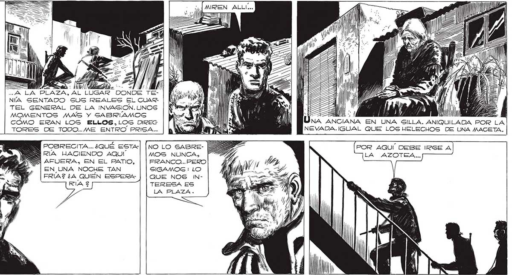
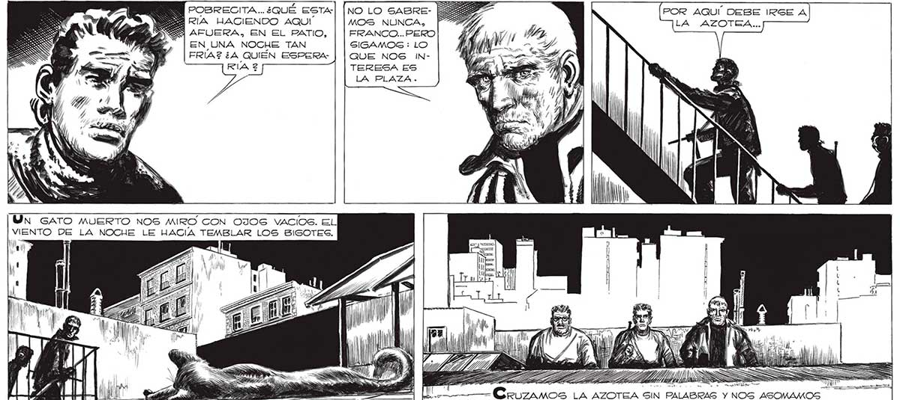
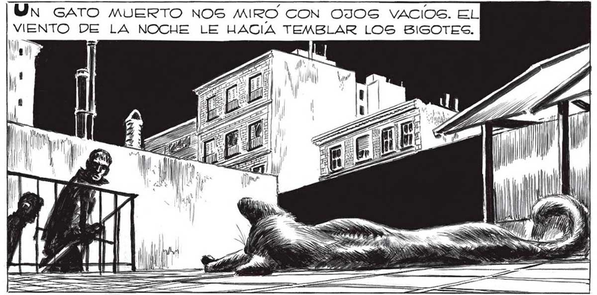

. MOMENTO EL PENSAMIENTO ABSURDO DE QUE NO TENIAMOS DERECHO A VIOLAR ASI EL ÚLTIMO SECRETO DE GENTE QUE NOS ERA TOTALMEN- EI E AA h 8 TE DESCONOCI- PLAZA, AL A A, a AA y Ml pz DA. PERO ES- NÍA SENTADO SUS REALES EL CUAR- | Kyo. "LM IT e ly" TABAMOS ACER- TEL GENERAL DE LA INVAGION.UNOS | N Faxes Ú ) | : A, CANDONOS ... MOMENTOS MAS Y GABRIAMOS y | | CAZA l COMO ERAN LOS ELLOS,LOS DIREG TORES DE TODO..ME ENTRO PRISA... | POSRECITA... ¿QUÉ ESTA| [NO LO SABRERIA HACIENDO AQUI MOS NUNCA, AFUERA, EN EL PATIO, FRANCO... PERO EN UNA NOCHE TAN SIGAMOS : LO FRIAS ¿A QUIÉN ESPERA QUE NOS INRIA 2 TERESA ES LA PLAZA Un GATO MUERTO NOS MIRO CON OJOS VACIOS. EL VIENTO DE LA NOCHE LE HACIA TEMBLAR LOS BIGOTES. el alaldie E Y Y z Sr 81 MAPAS Cru A LA BALAUOSTRADA.


